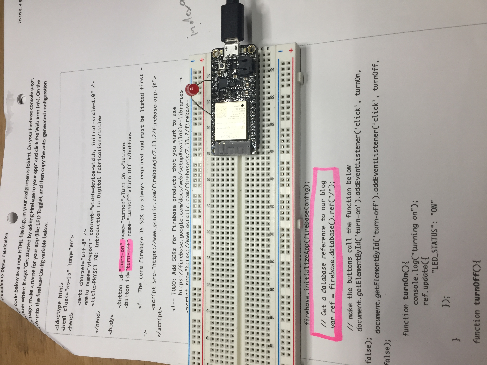
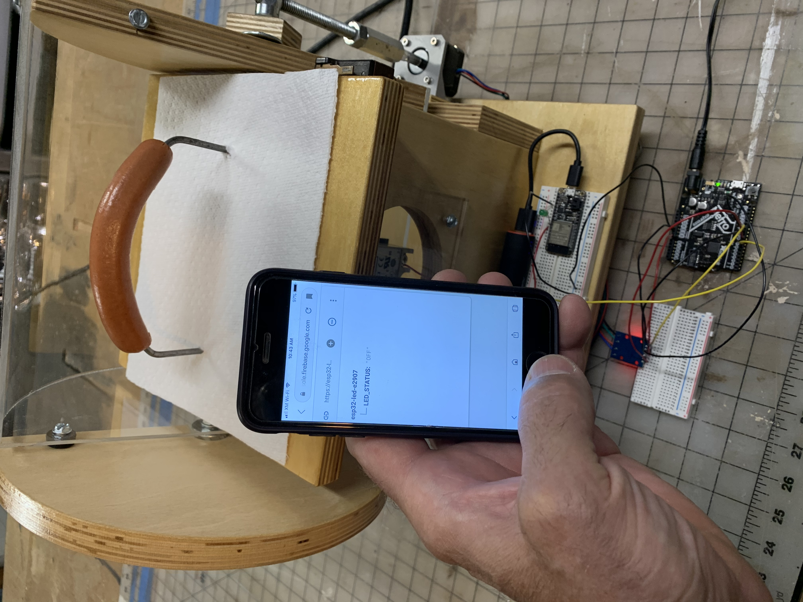

Since the last Fab Lab Zoom, I rigged up the hotdog cooker so that it can be activated over the web thru the esp32 Huzzah board. The Arduino Metro controls the stepper motor which closes and opens the safety cover. This is not the program or wiring I intend to use for the final version, but is just a beta test version to get the thing going with web control.
(Please get this one for me, Pikachu!)
Here is a link to a page to turn an LED on and off which is attached to my ESP32 board: LED Control.
Return to my home page.
I do not know how to program these functions yet, but these are the things I would like the hotdog cooker to do with regard to it's connection to the internet/web:
This is a photo of my iPhone starting a hotdog cooking cycle. WOW!
This is the maiden voyage of the hotdog project. Hold on!
(Yes. I did eat the finished product.)